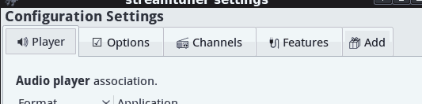

Settings dialog
There are various options for streamtuner2, available under Edit ▸ Preferences or via F12.

It's separated into three main sections / tabs.
- Player
Lists audio formats and the audio player applications, or recording tools below. It's a file type to application table. Double click an entry for editing.
- Options
Influences the display of all stream/station lists, and contains some system settings.
- Channel Plugins
Every channel tab can have specific options. These are configured here. Also you can disable channels you don't need.
Player application settings
MIME types are categorzied identifiers for file types. Audio/mpeg for example represents MP3 files, and audio/ogg means just OGG. And the player setting dialog simply associates an audio type with a playback application:
Format |
Application |
audio/mpeg |
audacious |
audio/ogg |
audacious |
audio/* |
vlc --one-instance |
video/* |
totem |
video/youtube |
vlc %srv |
Application names are most always lowercase binary names. Double click an entry to edit it. After editing, the icon next to the application name will be updated. If it stays green, it's likely to work. If it turns red / into a stop symbol, then the entered name is likely incorrect.
After the application name, you can optionally use a placeholder like "%pls" (default), "%m3u" (old), or "%xspf" (modern), and "%srv" (for direct streaming URLs). See placeholders.
Catch-all entries like */* or a generic audio/* entry allow to configure a default player. While video/youtube is specific to the Youtube channel. And url/http a pseudo MIME type to configure a web browser (for station homepages).
You can remove default entries by clearing both the Format field and its associated Application. Add completely new associations through the emtpy line. (Reopen the dialog to add another one.)
Recording Apps
The second block of entries in the 'Apps' section specifies recording applications. Here streamripper is preconfigured for audio streams, and youtube-dl for Youtube videos for instance.
audio/* |
xterm -e streamripper %srv |
video/youtube |
xterm -e "youtube-dl %srv" |
To define a target directory, you can often add commandline arguments to each. Also it's typically helpful to leave the xterm prefix on, so you can follow the processing state. (Alternatively to xterm there is x-terminal-emulator, or rxvt, gnome-terminal, xfce4-terminal, etc.)
Display/GUI options
Display settings
- Display favicons
The options for the favicons define if station entries should show little icons. Not all stations have one, so you might as well turn this off to conserve a little memory.
- Load favicons
When starting to play a station, its homepage favicon is automatically retrieved in the background. It's not going to be displayed right away, but after you reload the category/station list. Alternatively use Channel ▸ Update favicons... to update all station icons at once.
- Show bookmark star
Bookmarked stations will be marked with a ★ star in all other station lists / categories. That doesn't often work for the same station entry from two different channel services / tabs though.
- Save window states
Automatically remember window size, selected channel tab, categories, or selected station. Also keeps the width of station list columns. If disabled, you can manually save the current layout/selections via Edit ▸ Save States.
Station loading
- Prefer HTML traversing (PyQuery) over regex
Some channels provide proper APIs to fetch station lists. Others are just websites that require scraping listings out. Most channel tabs provide two alternative methods for that. The DOM/HTML selection method is sometimes slower, but more reliable. As fallback streamtuner2 plugins often use a regex to match text. Occassionally the regex method is surprisingly more exact, because directory services often use frightful unstructured HTML. If available, both methods are tried. You can influence the order with this setting, and thus speed it up.
- [250] Limit stream number
Constraints the length of station lists per category. The number of stations option is not honored by all channel plugins. Often it's not possible to load more or fewer station entries. Some plugins have own settings (in the 'Plugins' section) even. For the major plugins this however limits how many scrollable entries appear in the stream lists.
- Retain deleted stations
When enabled, keeps old station entries when updating/reloading a category/genre. Services often forget stations or throws them out when inavailable. With this option enabled, these entries are kept in streamtuner2 as strikethrough entries (often at the end of the list).
- Update favouries from freshened URLs
Streaming URLs in bookmarked stations get renewed on category reloads/updates. This isn't very reliable, as often station titles change together with the streaming URLs.
- google station homepages
When playing a station that doesn't have a homepage entry, streamtuner2 tries to google the station title. The found URL is then used/kept as station homepage. (Btw, station titles like www.mymusicstation.com are automatically mapped to homepage URLs already.)
System
- Temporary files
Streamtuner2 creates temporary .m3u files - for audio players that are configured to use %m3u files instead of %pls or %srv URLs. For archival purposes you might want to set a dedicated directory for this. In recent versions streamtuner2 will create a /tmp/streamtuner2 directory for itself. (You cannot set just `/tmp` anymore, because that will be mapped to the longer name. You can trick the old behaviour with `/tmp/.` however. Don't do that unless you have a reason).
- Reuse .m3u/.pls files
When converting online station playlists, streamtuner2 creates temporary files like shoutcast.11539398391891.m3u for your audio player. It'll keep those files around until you quit streamtuner2. That speeds up switching between and reconnecting to a previous station. It's in particular necessary when you use ⏭ or ⏪ directly in your player. For %pls references your player typically usues the online-only playlist files anyway. If you disable this option, then converted pls/m3u/xspf files get recreated repeatedly.
- Config directory
Is where streamtuner2 keeps its settings.json and channel caches, favicons, etc. You can't set this in the config dialog. This is just for display. Set the XDG_CONFIG_HOME environment variable to adapt.
- Enable debug messages
If you start streamtuner2 from a terminal window (xterm/rxvt), you can get a load of state and processing or debug infos. Enable this only for testing, as it might slow down station rendering.
- Disable threading
Now "threading" is a somewhat technical term. It means that an application runs different tasks internally at the same time. It's used for snappier interfaces. However, it's also difficult to get right at times. In Streamtuner2 some concurrent tasks conflict with updating the Gtk3 user interface. Which is why the application may crash even on reloading station lists or when switching between categories too quickly. This is only an issue for Python3 on Gtk3 with streamtuner2. In such cases you can disable the concurrent-tasking mode. The GUI will appear slower at times, and freeze between fetching lists, but remains stable on the upside. There's also a command line flag --nt to enable this workaround.
Channel and feature plugins and settings
The tabs Channels lists all available directory services. While the Features group provides internal or menu enhancements. Disabling or enabling a plugin however requires a restart of Streamtuner2 to take effect.

Each plugin can have its own little list of extra options. They'll be applied right away for already active channel/feature plugins.
If you want to find out more about the short option descriptions (most settings are checkboxes), please have a look into the channels directory /usr/share/streamtuner2/channels/ and corresponding *.py files. These are somewhat readable even to non-programmers, and sometimes contain more information.